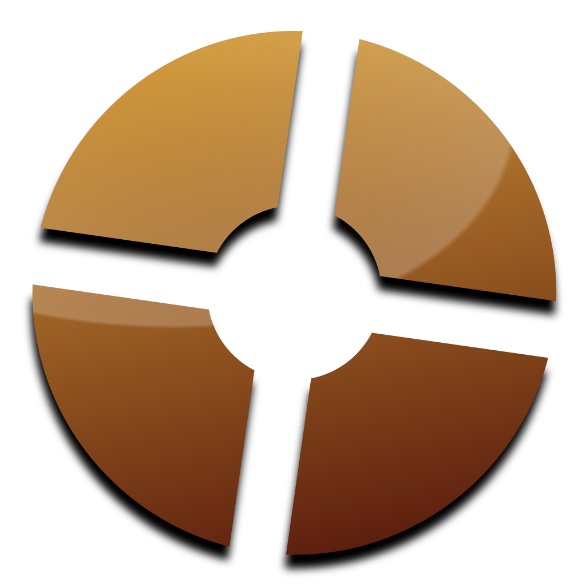

Team Fortress 2 Tips & Tricks |
What is Team Fortress 2? |
 |
| Half-Life Franchise |
Counter-Strike Franchise |
Day of Defeat |
List of all of Valve's Games |
Team Fortress 2 is a hero shooter that was created by Valve on October 10, 2007.
It includes 9 classes, each one with his own personality and own playstyle.
The classes are Scout, Soldier, Pyro, Demoman, Heavy, Engineer, Medic, Sniper, and Spy. Each class has a purpose for the team.
The following is a quick summary of the classes:
Scout is considered a flanker and focuses primarily on close range combat. His primary weapons can cause great damage at point-blank range
Soldier is the "Jack of All Trades" class, being able to deliver loads of damage. Soldier is the in-between.
Pyro can be a flanker, defense and a frontlines class. Pyro's mostly known for his ability to locate enemy spies.
Demoman is considered more of a defense class, capable of setting traps using sticky bombs.
Heavy is the most iconic class of Team Fortress 2. Heavy is one of the best classes for delivering damage.
Engineer is the bulder of Team Fortress 2. Engineer can support his team with dispensers and teleporters, all while having devastating firepower from his sentry.
Medic, the healer. Medic is almost necessary for winning. One of his most notable features is his game changing ÜberCharge, which can make a teammate invulnerable for 8 seconds. Medic is a total game-changer.
Sniper is the long range specialist. His sniper rifle is capable of taking out every class in the game. He is extremely useful for taking out important targets, a Medic for example.
Spy, personally one of my favorite classes, is an assassin-like class. He's capable of disguising as enemy or friendly teammates, disabling/destroying Engineer's buildings, and even capable of one-hitting an enemy by backstabbing them with his butterfly knife.